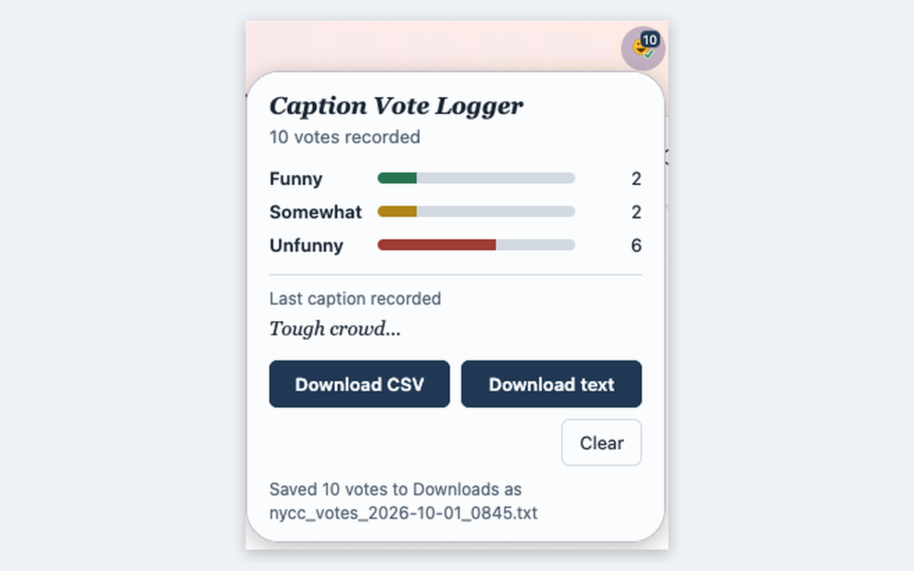
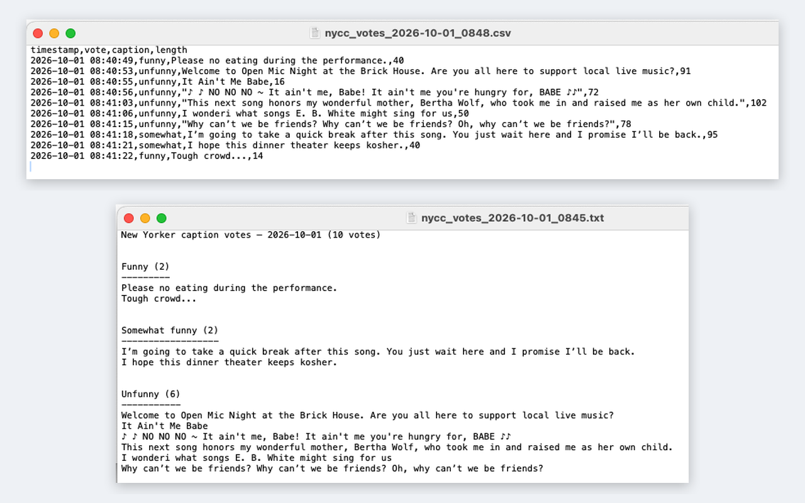

Caption Vote Logger
Keeps a list of the captions you vote on in the New Yorker and CartoonStock caption contests, along with your votes. Download your list as a CSV or plain-text file. Your data stays on your computer.
Firefox: click the button. Firefox will ask twice: click Continue to Installation, then click Add.
Chrome: click the button to open the Chrome Web Store, click Add to Chrome, then click Add extension. If Chrome says "Proceed with caution," that's because the extension is new to the Chrome Web Store; click Continue to install.
Edge: click the button to open the Chrome Web Store, click Get, click Allow extensions from other stores, then click Add extension.
Other browsers built on Chrome's engine, such as Brave, Opera, and Vivaldi, can also install this extension from the Chrome Web Store. Click the Chrome or Edge button.
For greatest ease of use, choose Pin to toolbar.


What it does
Caption Vote Logger keeps a list of the captions you vote on in the New Yorker Cartoon Caption Contest and the CartoonStock caption contest, along with the vote you gave each one: FunnySomewhat funnyUnfunny
How it works
When you click a vote button, the add-on reads the caption on screen and saves it along with your vote and the current date and time. It only reads the page. It doesn't click, vote, or change anything on the site.
How to use it
- Open the New Yorker or CartoonStock voting page.
- If the add-on's popup shows an Allow access button, click it and reload the page. This may be needed once per site.
- Vote as usual. The number on the toolbar icon counts your votes as you cast them. Your list is kept even after you close the browser or restart your computer, so you can vote over several days and keep adding to it. (Of course, it's safest to download your list at the end of every voting session, just in case.)
- Click the toolbar icon to see your totals and the last caption recorded, and to access the download buttons.
- Click Download CSV or Download text. The file goes to your Downloads folder.
- To erase the list and start fresh, click Clear, then click it again to confirm.
The downloads
- CSV: one row per vote, with the time, vote, caption, and caption length in characters. It opens in any spreadsheet app, such as Excel, Numbers, or Google Sheets.
- Text: a simple text file with the captions grouped under Funny, Somewhat funny, and Unfunny, in the order you voted.
Good to know
- Captions are recorded only when you click one of the vote buttons.
- In private windows (Incognito in Chrome), the add-on runs only if you allow it in the browser's add-on or extension settings.
- Your votes stay until you click Clear. Uninstalling the add-on also deletes them, so download first.
- CartoonStock support has been tested on a mock-up of its voting page and will be confirmed when voting opens on its current contest.
Privacy
This add-on does not collect any personal or log-in information and does not send any data anywhere. Your votes are stored locally in your browser and leave it only when you download them. It can access only newyorker.com and cartoonstock.com, and on those sites it reads only the caption and the button you clicked.
During installation, Firefox lists two required permissions. “Access your data for sites in 2 domains” means newyorker.com and cartoonstock.com, which allows the add-on to read the caption and your vote on those sites. “Download files and read and modify the browser’s download history” lets the add-on save your CSV or text file when you click Download. Firefox also shows that the developer says the add-on requires no data collection, which matches the paragraph above.
Chrome lists the same two permissions in its own words: “Read and change your data on all cartoonstock.com sites and all newyorker.com sites” and “Manage your downloads.”
Questions or feedback
Have a question, found a problem, or have an idea for an improvement? Email gregsthings@proton.me. If something isn’t working, it helps to mention which contest you were voting in and whether you use Firefox or Chrome.